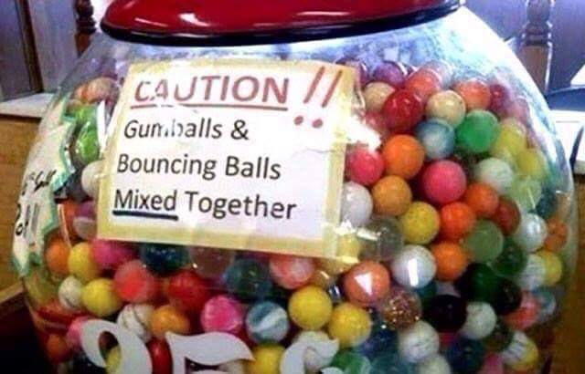

Memes of the Decade
By Davis Bryant
Cursed Images are another popular meme in recent years. Here are a few good ones.

Home
Pre Irony Era
The Great Schism
Post Irony
Meme of the Decade
Audio Memes of the Decade
Video Memes of the Decade
Cursed Images
Outside Links
Pre Irony Example
The Great Schism Example
Post Irony Example